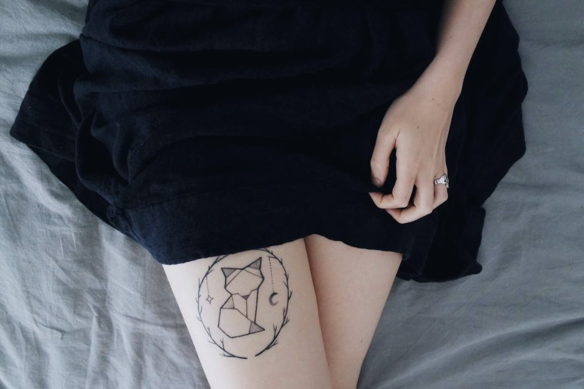
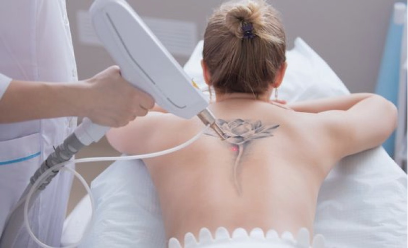
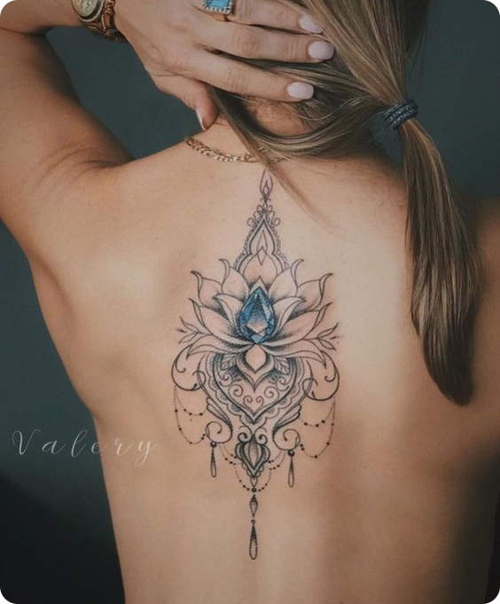
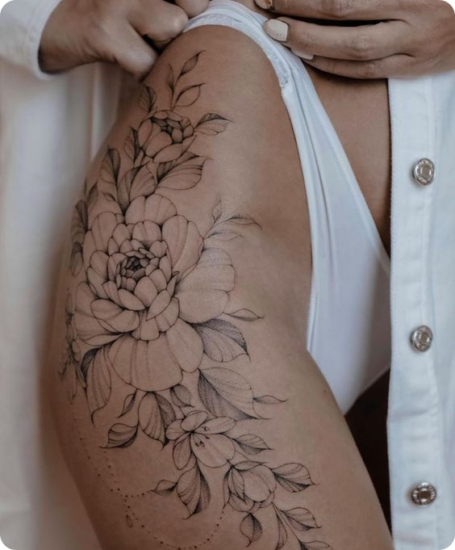
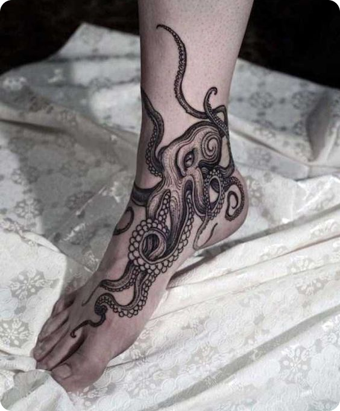
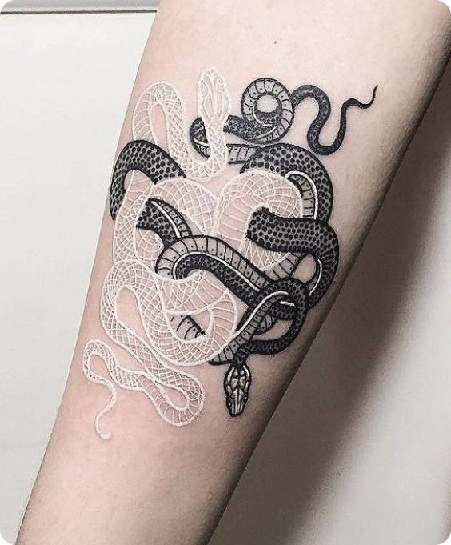
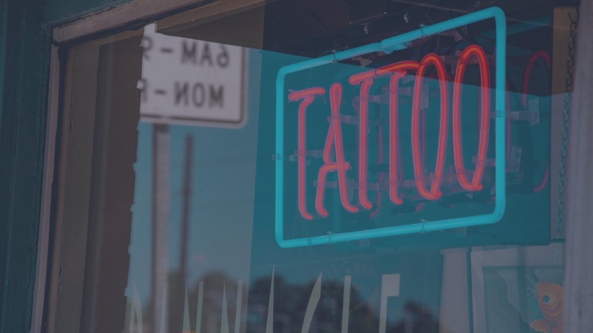

Татуировки
Индивидуальный эскиз, подбор размера и места, работа в разных стилях и подробная консультация по заживлению.
от 40 €Подробнее →
Делаем татуировки, пирсинг и лазерное удаление. Спокойно обсуждаем идею, помогаем с эскизом и подробно объясняем уход после процедуры.
От первого маленького прокола до крупной татуировки и аккуратного удаления старой работы.

Индивидуальный эскиз, подбор размера и места, работа в разных стилях и подробная консультация по заживлению.

Проколы ушей, носа, губ, бровей и других зон. Подбираем украшение и рассказываем, как ухаживать.

Лазерное осветление и удаление татуировок и перманентного макияжа поэтапно, с оценкой количества сеансов.
Рабочее место обрабатывается перед каждым клиентом, расходники одноразовые.
Не копируем чужую работу один в один — адаптируем идею под человека и место.
Если идея плохо будет выглядеть или заживать, скажем об этом заранее.
Не пропадаем после сеанса: можно написать и уточнить любой вопрос по заживлению.
Несколько примеров из разных направлений. Здесь специально без перегруженной галереи — только то, что хорошо показывает стиль.






Обсуждаем идею. Ты отправляешь референсы, примерный размер и место.
Согласовываем детали. Стиль, стоимость, длительность и свободное время.
Встречаемся в студии. Перед началом ещё раз утверждаем эскиз и размер.
Даём памятку по уходу. После процедуры ты точно знаешь, что можно и чего нельзя.
«Это была моя первая татуировка. Мастер спокойно всё объяснил, помог подобрать размер и не торопил с решением. Результат получился именно таким, как я представляла.»
Алина · татуировка«Делала пирсинг уха. Быстро, чисто и без лишней суеты. Отдельно понравилось, что подробно рассказали про уход и ответили на вопросы уже после процедуры.»
Мария · пирсингДа. Мы можем взять его за основу, подстроить под анатомию и подготовить к переносу на кожу.
Ощущения зависят от места, длительности сеанса и индивидуальной чувствительности. Большинство клиентов описывают процесс как терпимый.
Верхний слой кожи обычно успокаивается за 1–2 недели, полное восстановление занимает дольше. Мастер даст конкретные рекомендации после сеанса.